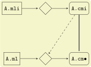
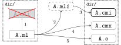
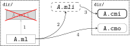

module A: sig (* contents of file A.mli *) end
= struct (* contents of file A.ml *) end;;"
OCaml: Build Discipline(s)
| Status: very rough as of 5/25/22. |
Compilation Units
Compilation units bridge the module system and the separate compilation system. A compilation unit is composed of two parts: an interface and an implementation. The interface contains a sequence of specifications, just as the inside of asig … endsignature expression. The implementation contains a sequence of definitions and expressions, just as the inside of astruct … endmodule expression. A compilation unit also has a nameunit-name, derived from the names of the files containing the interface and the implementation
"A compilation unit is composed of two parts: an interface and an implementation." No, it is composed of two files, both compiled, one for the interface and one for the implementation. It’s important not to gloss over the difference between file-system stuff and language stuff: "interface" and "implementation" are language-level concepts independent of file-system organization.
"A compilation unit also has a name unit-name, derived from the
names of the files containing the interface and the implementation".
The problem with this is that there is no "compilation unit" in the
file system, so there is nothing to name. The module composed of a
sigfile and a structfile has a name, but a module is not a compilation unit.
A compilation unit A comprises two files:
the implementation file A.ml, which contains a sequence of definitions, analogous to the inside of a struct…end construct;
the interface file A.mli, which contains a sequence of specifications, analogous to the inside of a sig…end construct.
These two files together define a structure [sic] named A as if the following definition was entered at top-level:
"These two files together define a structure" - no, they define a module. This kind of language can be very, very confusing to newcomers.
OBazl eschews this terminology on grounds that a) it conflates the concepts "module" and "compilation unit", and b) a compilation unit should be non-decomposible.
The "bridge" between the (language-defined) module system and the "separate compilation system" is the build discipline defined by the tools.
In fact it is difficult to give a clear, concise, and simple definition of "unit of compilation" for OCaml. Why? UoC spans both the language and the tooling. On the one hand the UoC for the language is any minimal bit of syntax that can be compiled. But from the perspective of building, unit of compilation usually means "source file" or similar. That is, it is file-system oriented. Hence "file-system unit of compilation"? And since "module" is a concept of the language, not the build system (ie. not involving the FS), it cannot be a FS unit of compilation.
FS UoC v. OCaml UoC
The FS units of compilation are sigfiles and structfiles. But this does not mean that units of compilation can always be independently compiled. In practice the units of compilation are sigfiles and structfiles together with their dependencies.
And to complicate things: a compiled module is itself a composite of two compiled units, the struct and the sig.
The docs say "A compilation unit is composed of two parts: an interface and an implementation." OBazl says: a module is composed of two compilation units. Or more precisely, a module is composed of a signature and a structure; filesystem module is composed of two compilation units, a (compiled) sigfile and a (compiled) structfile.
-
Structfiles always depend on compiled sigfiles.
-
Both may depend on other compiled modules, via OCaml’s
includedirective.
File Types
| action | input | output | remarks |
|---|---|---|---|
compile sig |
a.mli |
a.cmi |
|
compile struct |
a.ml |
a.cmo, a.cmi |
bytecode compile |
compile struct |
a.ml |
a.cmx, a.o, a.cmi |
native compile |
compile struct |
a.ml, a.cmi |
a.cmo |
bytecode compile |
compile struct |
a.ml, a.cmi |
a.cmx, a.o |
native compile |
archive |
a.cmo |
a.cma |
bytecode |
archive |
a.cmx, a.a |
a.cmxa, a.a |
native |
link |
a.cmo, a.cma |
a.byte |
bytecode executable |
link |
a.cmx, a.o, a.cmxa, a.a |
a.out |
native executable |
Q: a.cmi input to archive action? iow can an archive contain a standalone sig?
Q: what about dynamic linking, e.g. a.cmxs?
Modules and the File System
Signature compilation

Dyadic Modules
A dyadic module is a filesystem module composed of a structfile and a sigfile.
Singleton structfiles
An singleton structfile is a structfile with no corresponding sigfile; that is, no sigfile with matching principal name in the same directory. It is possible to have one or more matching sigfiles in other directories, but only a sigfile in the same directory may count as a "matching" sigfile.
principal name = file name with extension removed. E.g. the
principal name of foo.ml is foo.
|
A singleton module is a filesystem module derived from a singleton
structfile. Singleton modules are still composed of two compilation
units, one for the signature and one for the structure, but the
signature is the principal signature inferred from the singleton
structfile. For example, from singleton structfile A.ml the
compiler with infer and then compile A.mli. The compiler will emit
A.cmi but not A.mli.

Figure 1. Native

Figure 2. Bytecode
Principal Signatures
The compiler can extract the principal signature from a module if you
pass it the -i option. For this to work, though, all dependencies -
structs and sigs - must be compiled first, so it is not as simple as
passing the structfile source to the compiler with the -i flag.
The OBazl rule ocaml_module does not support the -i option; adding
it would complicate the rule implementation for little benefit, since
another method is available.
The alternative is to compile the module and then use a third-party
utility named cmitomli to extract the (textual) sigfile from the
compiled .cmi file. This is supported by tooling in tools_obazl.
So if you want to extract the principal signature for a structfile,
you can use:
$ bazel run @tools_obazl//sig:extract --@tools_obazl//ocamlobj=//package:target
This tool will build the target //package:target and then run
cmitomli (which you must have installed in the OPAM switch you’re
using; see X for more information on this) on the emitted .cmx/.cmo file.
You can shorten this by defining a flag_alias in your .bazelrc:
build --flag_alias=obj=@tools_obazl//ocamlobj
Then you can run:
$ bazel run @tools_obazl//sig:extract --obj=//package:target
You can shorten it further by defining a local alias for
@tools_obazl//sig:extract; e.g. in your root BUILD.bazel file:
alias(name = "gensig", actual = "@tools_obazl//sig:extract")
Then you can run:
$ bazel run :gensig --obj=//package:target
Cross-Module Optimization
When the native compiler compiles an implementation, by default it produces a .cmx file containing information for cross-module optimization. It also expects .cmx files to be present for the dependencies of the currently compiled source, and uses them for optimization. Since OCaml 4.03, the compiler will emit a warning if it is unable to locate the .cmx file of one of those dependencies.
— Ch 14 Native-code compilation
In other words, the .cmx files are only needed for cross-module
optimization. The .cmi files, by contrast, are always needed for
symbol resolution. Both are needed for linking to an executable.
Which suggests that the code produced by compiling a module contains only references to its dependencies; it does not embed the referenced code.
In other words, a compiled OCaml module is analogous (for build
purposes) to a C library. To link it you must list it explicitly as a
linkable resource so the linker knows about it, but to compile
something that depends on it you only need the .cmi file.
Or: the .cmi files are analogous the C header files. You do not need
the compiled dep in C to compile your client code to a .o file; you
only need the headers with function prototypes, etc. It’s only when
you go to link your .o files into a library or executable that you
need the .o files it depends on; you don’t need them when you’re
compiling.
Same story for OCaml .cmi and .cmx files. You don’t need the .cmx file of a dep to compile your code (unless you want cross-module optimization), but you do need the .cmi file that exposes the interface of the .cmx file, and you need the .cmx file to link your (compiled) code.
-
-opaque -
-no-alias-deps
If a module A depends on module B:
-
compilation of module A always depends on b.cmi, but may not depend on b.cmx.
-
b.cmx is only needed for cross-module optimization, which may be disabled by
-opaque
-
-
linking module A into an executable always requires b.cmx (and b.cmi) to be linked first
-
linking module A into an archive means …?
In other words, "module dependency" has multiple meanings. We have compile-time dependencies and link-time dependencies, and they are not necessarily the same.
In other other words, the OCaml compilers conflate compilation and linking.
Module Dependencies
-
Always means "signature dep"
-
Sigs then depend on structs
The open and include directives
| The OCaml language definition does not use the term "directive" for these keywords. |
Compare the C build discipline. A source file like foo.c is a unit
of composition, but only after preprocessing. If foo.c contains
#include "foo.h", then the textual content of the latter will be
embedded in the textual content of the former, forming the compilation
unit.
The OCaml include directive does not work textually like this. If
the text of module A contains include B, this tells the compiler
to embed module B compiled in module A.
For sigs: Including a signature
FIXME: "The expression include module-type in a signature performs
textual inclusion of the components of the signature denoted by
module-type. ". Not clear what "textual inclusion" means. Does it
mean the source text? I don’t think it can. module-type does
not necessarily correspond to a source file.
For structs: Including the components of another structure
"The expression include module-expr in a structure re-exports in the current structure all definitions of the structure denoted by module-expr. "
Executables
-
Running executables produced by ocamlopt Executables generated by ocamlopt are native, stand-alone executable files that can be invoked directly. They do not depend on the ocamlrun bytecode runtime system nor on dynamically-loaded C/OCaml stub libraries.
misc notes
The OCaml compilers and tools are very flexible. In particular, bytecode builds can be customized in a variety of ways.
-
meaning of "library"
-
Build modes
-
Multiple outputs
-
Output file types:
-
.cmo/.cmx -
.cmi -
.o/.a,.obj/.lib -
.cma/.cmxa -
.cmxs -
.cmt/.cmti -
.cmir-linear -
etc.
-
-
"compilation unit"
-
"auxiliary" outputs, e.g. cmt/cmti, intermediate files (asm, etc.)
-
-
custom runtime mode (for bytecode output)
-
-custom- linker produces an output file that contains both the runtime system and the bytecode for the program. -
-make-runtime- Build a custom runtime system, to be used later to execute bytecode executables produced with theocamlc -use-runtime runtime-nameoption. -
-use-runtime- Generate a bytecode executable file that can be executed on the custom runtime system built earlier withocamlc -make-runtime
-
-
-packand-for-pack -
-nostdlib- use customized stdlib -
-i- emit interface file -
-output-obj- Cause the linker to produce a C object file instead of a bytecode executable file. This is useful to wrap OCaml code as a C library, callable from any C program. -
-output-complete-exe- Build a self-contained executable by linking a C object file containing the bytecode program, the OCaml runtime system and any other static C code given to ocamlc. -
-output-complete-objSame as -output-obj options except the object file produced includes the runtime and autolink libraries. -
Dependencies
-
Namespacing
-
Preprocessing
-
-pp -
-ppx
-
-
-runtime-variant d- use debug version of runtime -
-stop after <pass>passes: parsing, typing -
-save-ir-after <pass>- passes: scheduling. Experimental, native code only -
-Skeep assembly code
Special consideration: -open